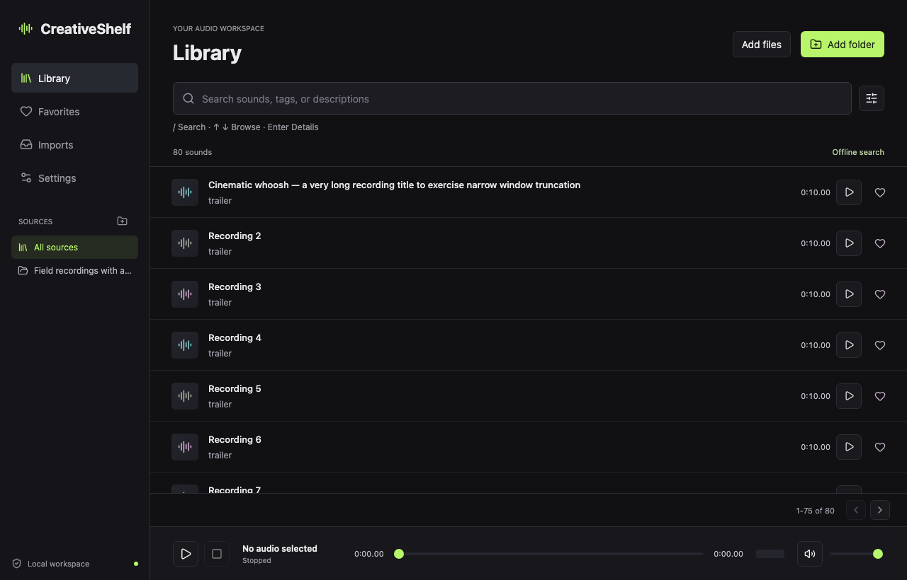

Every sound you own,
one search away.
A free, open-source library for your sound effects and audio files. Point it at your folders, then search, preview, tag and clip, all offline on your own computer.
Download CreativeShelf
Find sounds instantly
Typo-tolerant search across names, tags and descriptions, with no internet needed.
Preview and clip
Play with a waveform, mark the part you need and export a clip ready for your editor.
Your files stay yours
No account, no uploads, no telemetry. Originals are never modified.
Works with AI agents
Optional local MCP access lets your AI tools search and tag your library, with scoped permissions.
Download
First launch
Mac
- Open the downloaded
.dmgand drag CreativeShelf into Applications. - Open CreativeShelf. If macOS says it can't verify the app, click Done.
- Go to System Settings → Privacy & Security, scroll down and click Open Anyway, then confirm.
Windows
- Run the
-setup.exeinstaller. - If "Windows protected your PC" appears, click More info → Run anyway.
Linux
Make the .AppImage executable and run it, or install the .deb with sudo apt install ./CreativeShelf_*_amd64.deb. Verify with gpg --verify FILE.asc FILE using the release key from the release page.